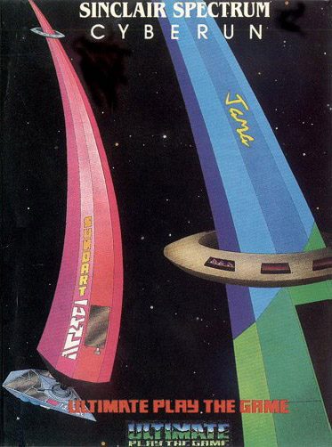
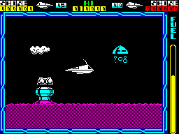
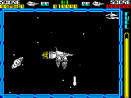
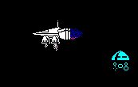

Cyberun


{kind=link}

| Publisher: | Ultimate Play the Game |
| Price: | £9.95 |
| Year: | 1986 |
| Source: | CRASH, Issue 28 |

Far away, deep in space, is the Zebarema, a closely knit cluster of worlds and stars. This is a very unusual planetary system, held in a powerful lattice of plasmic energy — a mega powerful magnetronic field. In short, it’s not a place that people would really want to go to: it would take a ship of previously unheard of power to land and actually be able to pull free of the incredible pulse field that surrounds each of the Zebarema worlds. No, this is not a nice place to go and no sane person would venture anywhere near the Zebarema, if it wasn't for Cybernite. The planets in the Zebarema are formed from Cybertron, an anti-element which crystallises to form Cybernite when it is exposed to positive matter space.

pick up a set of bolt-on boosters. Watch
out for that helmeted alien and the little
cloud
People will go to pretty amazing lengths to rule the galaxy and Cybernite is the elemental key to galactic domination. It is the hardest substance that exists, just the sort of thing that is most handy if starmining is your trade. Starmining is a pastime which confers the reward of ultimate power — get good at it, and the energy market becomes yours. Great minds worked hard and long on the Cybernite problem and a solution was set upon. A ship of truly awesome engine strength has been constructed in sections, which have been transported to the Zebarema system. This mega ship, capable of escaping from the Antiplasmic Lattice with a cargo of Cybertron, needs to be assembled. You have been chosen to pilot the command module of this craft to the Zebarema system, and must find the mega boosters, solar sails and other add-ons scattered around the area and create the ultimate spacecraft.
The task is not a simple one — you’re not the only fellow after galactic domination and there’s another ship of a similar design to yours scavenging the planet for ship parts. Alien beings are out to halt or at the very least hinder you. The worst thing about these aliens is the suicidal side of their nature: kamikaze body bashes into the ship’s hull is their speciality. Luckily though, the ship in your command is made of a sterner stuff than the average alien, and they smear explosively, though not harmlessly, over your shield field. The shield takes a pounding, losing energy with each attack and if it gets to zero then ‘BLAM’. At least you have four ships to play with.

the Zebarema system is ever likely to
get — unless you can find the rest of the
parts that supercharge your craft.
Cyberun is a scrolling game, and the background whizzes behind your ship which sits centrally on the screen. The background is shown from a side on, cross sectional viewpoint and the playing area is huge. Flying skywards takes the ship into a zone with meteors and shooting stars, though the magnetronic field prevents all but the most fully equipped ship from going spaceside. Drifting back through the atmosphere, stratospheric cloud formations are encountered — some clouds are happy to rain harmfully on you while others are solid enough to provide a perch — then you’re back at sea level where a complex cave system needs to be explored.
Left, right, thrust and fire enable an experienced pilot to perform proficiently. No down control is provided because gravity sees to that. The weapon system, when activated, sends a pulsing bolt of plasma into the inky black, dealing death to any bad guys that it spears through. A plasma ray can also be added to the inventory of equipment. Though the command module is a neat bit of kit, ship customisation is a must, as the basic craft is very slow. Two boosters are to be found near to the start point of your mission: a horizontal one and a vertical one. Fly through them and they become part of the ship automatically, handily enhancing your capabilities.
Enhanced though you may be, death is still a readily available commodity within the Zebarema worlds. A small graphic representation of your craft appears on the top of the screen and its colour changes every time damage is received. Fuel is limited, and the level in your tanks is indicated by the thermometer gauge running down the right hand side of the screen. Extra fuel can be picked up from fuel stations around the planetary surface which spout droplets of this precious commodity. Fly through a droplet of fuel and the gauge gets well excited, repeaking to the ‘full’ mark. And death is worth avoiding, especially when the prize is total power. Are you megalomaniac enough to take the strain?
CRITICISM

boosters attached, your craft can zoom
around doing battle with the nasties.
“After the last few Ultimate releases this is the last thing I expected. No Filmation I or II or anything like that — it’s more like their old Lunar Jetman style and could well be mistaken for a follow up to the classic shoot em up. Initially this shoot em up / arcade adventure seems to be more of a regression than progression, but once you start playing it becomes increasingly clear that Ultimate have produced yet another excellent game. The playing area is huge and there are some excellent graphical effects like the stars which are beautifully parallaxed. It’s nice seeing Ultimate produce something other than a Filmation game and a game which someone can wholeheartedly recommend.”
“Ultimate’s last release was, as usual, a brilliant game. Now finally, after two years, they have released a shoot em up. Cyberun is effectively the follow on to Lunar Jetman. The graphics are very good and playability wise Cyberun is an excellent game. Going around shooting the assorted nasties is fun. The idea of gradually equipping your ship is a very good one — the inlay card doesn’t give much away, so it is a challenge just to find out what all the various goodies are for. Shoot em ups are always fun and Cyberun is no exception. The overtones of arcade adventure make it just as addictive. This is a classic shoot em up which I’m sure all fans of Lunar Jetman will enjoy.”
“So, Ultimate are back in the shoot em up stakes again. I’m sure fans of the earlier games will be pleased; I know I am! The graphics are very good, and move as they should do, smoothly and evenly. Pity about the colour clashes, but I suppose they couldn’t avoid them. The game itself is very good fun, and I found it quite challenging, though the sort of people who complete an Ultimate game every ten minutes will disagree. Value for money is pushed up with the inclusion of a head cleaner and generally, I think Ultimate have got their act back together again: hooray!”
COMMENTS
| Control keys: | Z,C,B,M left, X,V,N,SYM SHIFT right, second row of keys for up, third row fire lasers, number keys for plasma ray |
| Joystick: | Kempston, Interface 2, Cursor |
| Use of colour: | Quite pretty |
| Graphics: | Very good, neat scrolling |
| Sound: | Jingles and spot effects |
| Skill levels: | One |
| Screens: | Huge scrolling playing area |
| General Rating: | A good arcade adventure shoot em up! |
| Use of Computer: | 88% |
| Graphics: | 91% |
| Playability: | 91% |
| Getting Started: | 82% |
| Addictive Qualities: | 92% |
| Value For Money: | 89% |
| Overall: | 90% |